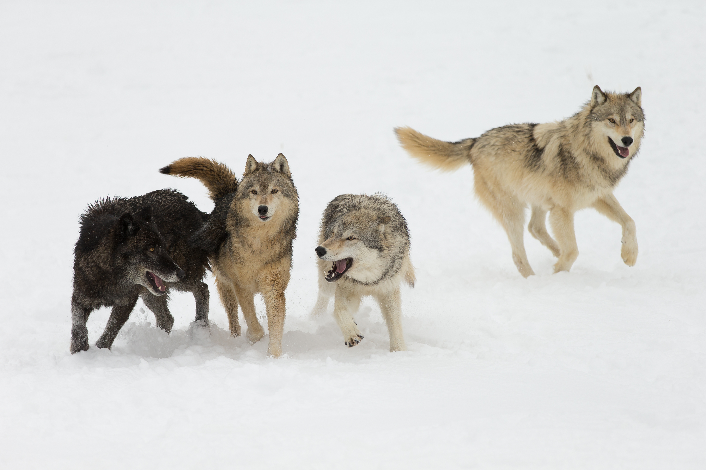

The Evolution and Domestication of Dogs
Hey, it's different now. I'll probably keep this topic and just expand on it later.

Introduction
The modern dog is a part of many families around the world. From a Great Dane to a Chihuahua to a Golden Retriever, there is a dog for everyone.
Of course, dogs weren't always simply loveable pets we keep in our homes. This website explains, simply, the process and evolution of the domesticated dog.
Wolves and Man
Before we had the dog, we had the wild wolf. These canids have been around for millions of years, often hunting in the cold expanses of the Ice Ages.
Wolves hunted almost exclusively in packs of two or more, to ensure their safety and to more easily surround and attack their prey. As canids, they are opportunistic eaters, and would hunt larger prey such as caribou, horses, and even smaller mammoths. However, they could eat berries or plants if they so desired.

When the common man arrived thousands of years later, the hunter-gatherers related their pack hunting to their own. Though it is not fully known how the two species initially interacted, eventually the hunter-gatherers hunted alongside the wolves for food, while giving the wolves safety and shelter, mutually benefitting each other.
Adapting to Man
As years went by, the wolf became accustomed to living with man. They began hunting less, and started to rely on man to hunt for them and keep them safe. This new lifestyle eventually affected their genetic patterns in evolution.
Over the course of thousands of years, domesticated wolves evolved to adapt to a more commensal lifestyle, where the wolf is being assisted and the human receives no significan benefit. This includes changes to skull and ear shape, overall metabolism changes, and even changes to fur texture and pigment.
The behavior of the wolf began to change as well. Before, survival of the fittest was the most important thing for a wolf. Now, wolves evolved to be more social towards man, and to become less afraid of the species and more reliant upon them.
Rise of the Dog
Over thousands of years, wolves as a species became further domesticated, evolving alongside the common man to adapt to new terrain and environments, and eventually, the wolf became the dog. Hunting was now secondary to companionship, and they rely almost fully on man.
Since their domestication, dogs have learned to recognize many gestures or phrases given to them, and attempt to please their owner to receive praise or recognition.
Dogs are able to respond to simple gestures, such as:
- Pointing
- Waving
- Beckoning
- Head nodding
- Posture
As compensation, the dog has retained its protectiveness from the era of the pack-hunting wolves, and will defend its owner from anything it sees as a threat.